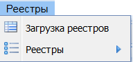
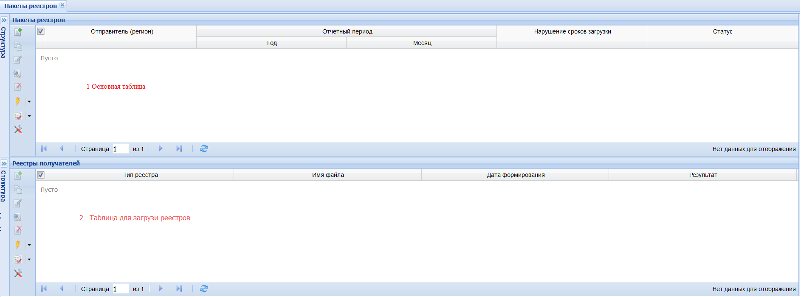
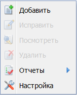
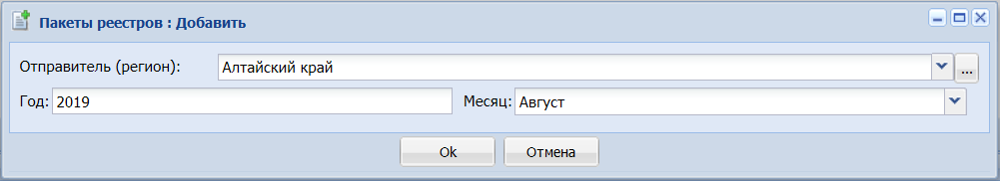
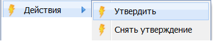
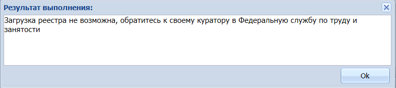
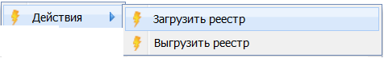
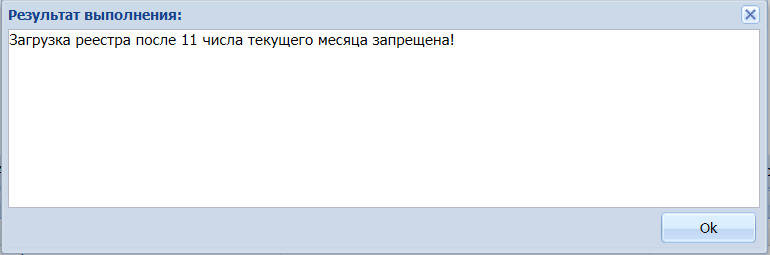
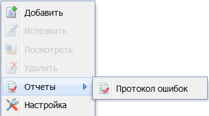

|
<< Click to Display Table of Contents >> 2.4.1 Загрузка реестров |
 
|
|
<< Click to Display Table of Contents >> 2.4.1 Загрузка реестров |
|
Для загрузки реестров выбрать в главном меню раздел «Реестры» а «Загрузка реестров» (Рисунок 9). Откроется представление (Рисунок 10), состоящее из главной таблицы (1) и таблицы спецификации (2)

Рисунок 9 - Меню раздела «Реестры»

Рисунок 10 - Рабочая область для загрузки реестров
В таблице 1 вызвать контекстное меню и выбрать «Добавить» (Рисунок 11).

Рисунок 11 - Контекстное меню главной таблицы
В открывшейся форме (Рисунок 12) по умолчанию заполнены все поля. При необходимости изменить период загружаемых реестров в строках «Год» и «Месяц» ввести необходимые данные.

Рисунок 12 - Добавление отчетного периода
Поле Отправитель (регион) для изменения не доступно.
По умолчанию созданной строке присваивается статус «Не утверждено». Реестры, находящиеся в статусе «Не утверждено» могут быть скорректированы сотрудниками их загрузивших (осуществляется их повторная загрузка с внесенными изменениями).
Перевод в статус «Утверждено» осуществляется уполномоченными сотрудниками Роструда. Для утверждения загруженных пакетов вызвать контекстное меню и выбрать пункт «Утвердить» (Рисунок 13).

Рисунок 13 – Изменение статуса загруженных пакетов
После перевода в статус «Утверждено» для осуществления сведения данных по всем регионам возможность редактирования реестров блокируется и при попытке загрузки реестра Система выводит сообщение (Рисунок 14).

Рисунок 14 - Блокировка при попытке загрузки реестра
При необходимости внести изменения в ранее загруженные реестры уполномоченными сотрудниками Роструда выполняется действие «Снять утверждение» (Рисунок 13).
Перейти в таблицу спецификации. Для загрузки любого реестра, вызвать контекстное меню и выбрать пункт «Загрузить реестр» (Рисунок 15).

Рисунок 15 - Меню «Действия»
С использованием штатного проводника выбрать файл реестра в утвержденном формате .xml с данными за отчетный период.
Важно! При загрузке файлов с 11 числа до конца текущего месяца Система не позволит загрузить ни один реестр (Рисунок 16). При необходимости загрузить реестры в указанный период обратиться к куратору в Федеральную службу по труду и занятости. При нарушении сроков загрузки в колонке «Нарушение сроков загрузки» показатель примет значение «Да».

Рисунок 16 - Запрет загрузки с 11 числа до конца текущего месяца
При загрузке файлов реестров осуществляться проверка на соответствие формата и корректности вводимых данных и выявление несоответствия представленных сведений установленной форме с выводом сообщений об ошибках (при их наличии). Файлы реестров при успешной загрузке храниться в базе данных. Для просмотра содержащейся информации в загруженных реестрах в формате .xml, вызвать контекстное меню и выбрать пункт «Выгрузить реестр» (Рисунок 15).
В случае наличия ошибок в момент загрузки формируется протокол выявленных несоответствий в формате txt и включает перечень критических ошибок (Таблица 1) и не критических ошибок (Таблица 2).
Таблица - Ошибки при которых реестры не загружаются
№ п/п |
Условие |
Сообщение |
Примечание |
1 |
При утвержденном периоде любые действия с реестрами не возможны |
Загрузка реестра не возможна, обратитесь к своему куратору в Федеральную службу по труду и занятости. |
|
2 |
Формат загружаемого реестра не соответствует |
Формат загружаемого реестра не соответствует. Реестр не загружен. |
|
3 |
Поле senderType не соответствует справочнику |
Код отправителя не соответствует отправителю. Реестр не загружен. |
Справочник «Организации» поле «Отправитель (регион)» |
4 |
Поле year не соответствует отчетному периоду |
Год отчетного периода в реестре не соответствует отчетному периоду. Реестр не загружен. |
|
5 |
Поле month не соответствует отчетному периоду |
Месяц отчетного периода в реестре не соответствует отчетному периоду. Реестр не загружен. |
|
6 |
Поле reestrNumber не соответствует справочнику |
Номер реестра не соответствует. Реестр не загружен. |
Справочник «Виды пособий» поле «Номер реестра» |
7 |
Поле receiverCategory не соответствует справочнику |
Категория получателя пособия не соответствует. Реестр не загружен. |
Справочник «Категории получателей» поле «Код» |
8 |
Поле credentialType не соответствует справочнику |
Вид документа, удостоверяющего личность получателя, не соответствует. Реестр не загружен. |
Справочник «Документ, удостоверяющий личность» поле «Код» |
9 |
Поле certificateType не соответствует справочнику |
Вид документа, подтверждающего факт рождения ребенка, не соответствует. Реестр не загружен. |
Для реестров benefit01; benefit04; benefit05 Справочник «Документ, подтверждающий факт рождения ребенка» поле «Код» |
10 |
Значения полей sumPay, extraPay, sumReturn, sumRetention, sumTotal =0 |
Суммы при заполнении должны быть больше нуля. Реестр не загружен. |
|
Таблица – Значения, при которых реестры загружаются с ошибкой
№ п/п |
Условие |
Сообщение |
Примечание |
Доплата, возврат или удержание к ранее переданным суммам |
|||
Сведения, идентифицирующие получателя пособия, отсутствует в Системе |
Данные по получателю пособия (указывается Фамилия Имя Отчество (при наличии), серия и номер документа, удостоверяющего личность, не подтверждены). Реестр загружен с ошибкой. |
Фамилия, имя и отчество (при наличии), серия и номер документа, удостоверяющего личность, должны быть одинаковыми как внутри одного файла, так и по всем файлам, включая ранее переданные |
|
Сведения, идентифицирующие ребенка, отсутствует в Системе |
Данные по ребенку (указывается Фамилия Имя Отчество (при наличии), серия и номер документа, подтверждающего факт рождения, дата рождения не подтверждены). Реестр загружен с ошибкой. |
Фамилия, имя и отчество (при наличии), серия и номер документа, подтверждающего факт рождения, дата рождения, должны быть одинаковыми как внутри одного файла, так и по всем файлам, включая ранее переданные |
|
Для сохранения файла протокола, вызвать контекстное меню и последовательно выбрать «Отчеты» а «Протокол ошибок», сохранить его штатными средствами операционной системы для дальнейшего анализа пользователем загрузившим реестр (Рисунок 17).

Рисунок 17 - Формирование протокола ошибок
При загрузке реестров обеспечивается проведение форматно-логического контроля загружаемой информации. При корректной структуре данных загруженный реестр принимает статус «Проверен».
При наличии одной из перечисленных ошибок (Таблица 1) реестр не загружается. При наличии ошибок (Таблица 2) реестры загружается и его статус принимает значение «Ошибка».
В случае отсутствия ошибок, протокол не формируется.